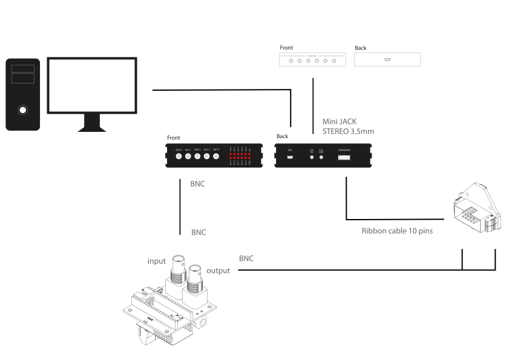

Foraging Patch Output Expander Wiring Schematic#
The foraging patch is a motorised assembly designed to deliver dried pellets of food on a trigger, e.g. when the wheel is turned above a threshold distance, measured through a mounted magnetic encoder. This assembly is controlled by and connected to other hardware infrastructure through a Harp output expander.
Connections#

The output expander is connected to the behaviour machine by mini-USB, which both powers the device and enables communication between the device and computer.
The output expander also recieves a common clock signal through a 3.5mm stereo audio jack connection from one of the ‘Clock out’ ports on the timestamp generator.
The expansion port of the output expander is connected to the magnetic encoder via a 10-pin socket (IBC10) to a 10-pin connection the magnetic encoder component of the feeder
The BNC output, ‘Output0’ on the output expander is connected to the ‘INPUT’ BNC port on the foraging patch assembly to carry the TTL pulses to deliver pellets or reset the foraging patch, determined by one of two different pulse widths.
The ‘OUTPUT’ BNC port of the foraging patch is connected to the screwgate terminals alongside the magnetic encoder socket, in order to receive the beam break events